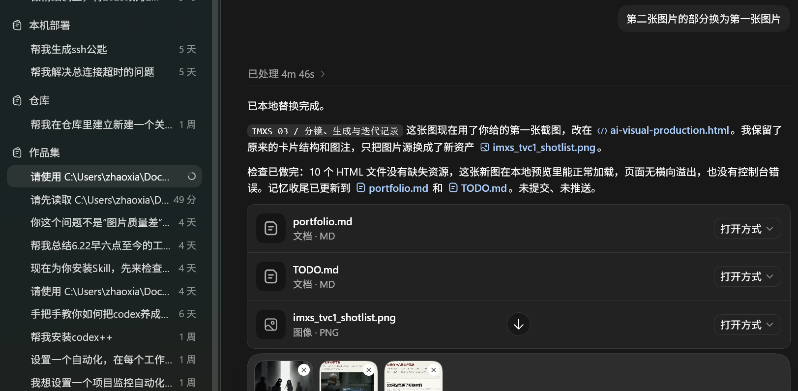

短篇内容撰写
已发布 3 篇公众号文章，保留站内全文、选题拆解和阅读数据。内容来源包括个人情绪、社会观察和现实议题。
查看文章样本 →Editorial Portfolio Archive
朝夏｜网易传媒内容运营实习生应聘作品集
我长期写作，也使用 AI 做内容。
这些项目来自同一套材料：记录、关系、身体感受、品牌语气、图像和现场经验。它们后来分别成为文章、影像、IP、展览和这个网站。
AI 参与整理与生成，但内容方向由我判断。
这里不是逐条硬贴岗位要求，而是把已经完成的写作、AIGC、选题复盘和项目执行材料，放到网易传媒内容运营实习生可能会用到的几个方向里。
已发布 3 篇公众号文章，保留站内全文、选题拆解和阅读数据。内容来源包括个人情绪、社会观察和现实议题。
查看文章样本 →《思感集》保留长期选题来源，公众号数据用于回看标题、情绪浓度、正文结构和分发方式。
查看思感集 →IMXS、《坠落静默》和被单人分别对应品牌视觉、原创叙事和情绪 IP，覆盖图像生成、视频方向、提示词和视觉包装。
查看 AIGC 专题 →《坠落静默》把长期心理感受整理成原创叙事；被单人把打工人疲惫、体面发疯和 meme 语境转化为角色与物料。
查看叙事项目 →已完成公众号发布、网页作品集发布、GitHub Pages 部署和项目资料整理。站外平台上传、社群维护等工作可在此基础上迁移。
查看网站生产流程 →使用 AI 生成工具、设计软件、剪辑工具和代码协作工具完成视觉内容、网页搭建、资料整理和项目发布。
查看简历 →我做内容时通常会经历几个环节：先记录和判断，再整理结构，用 AI 辅助扩展，最后根据平台、语气和受众调整表达。
AI 提高效率，但运营决定方向。我关心的是如何让选题更准确、观点更清楚、表达更适合平台，也更值得被读完。
在 AI 和算法都偏向简短、直接、碎片化表达的时代，我更重视完整、成体系、能让人停留的文字。
内容不只是信息传递，也可以是一段陪伴、一场对话、一种向世界坦诚的方式。这个判断贯穿思感集、公众号文章、AI 生成内容专题、展览体验、观察档案和网站生产流程。
这个作品集不是把多个作品简单摆在一起，而是把我平时的输入、判断、AI 辅助生产和项目输出放到同一条线上。
持续记录真实感受、身体反应、社会议题和内容灵感。
把私人观察转化为可以被讨论、被发布、被延展的公共议题。
用 AI 辅助结构整理、语言迭代、影像生成、产品形态推演和代码实现。
先展示内容本身，再在最后说明这个网站如何被整理、生成、修改和发布。
最后回到日常工作：找材料、定方向、做内容、包装发布、看反馈。
如果只看项目结果，会觉得这些作品分散在写作、AI、影像、IP 和展览之间。
但它们其实有同一个起点：我长期记录自己的感受、关系、身体反应、社会观察和对表达的思考。
《思感集》不是放在作品集里的一个栏目，而是我判断内容的方式。它后来进入了公众号文章、《坠落静默》的心理叙事、被单人的情绪 IP、IMXS 的品牌语气判断，以及这个网站本身的结构整理。
从 AI、心理、关系、艺术和社会事件中提炼可被平台阅读的观点。
为《坠落静默》提供压抑、边界、崩塌、接纳和连接等核心议题。
长期训练语言节奏、情绪控制、标题意识和内容复盘习惯。
下面是目前最能代表我做内容方式的几个项目。首页只放入口，细节放在各自的项目页里。
MAIN CASE / WRITING SYSTEM
记录长期写作、公开发布和数据复盘，也说明整个作品集的材料来源。

MAIN CASE / AIGC WORKFLOW
IMXS、《坠落静默》和被单人放在同一专题中，分别从品牌、原创叙事和产品设计三个方向展开。

SUPPORT CASE / CONTENT IN SPACE
把内容从文字和屏幕带到真实空间里，观察观众如何走动、停留、阅读和参与。

MATERIAL ARCHIVE / FIELD NOTE
记录项目开始之前的材料：朋友圈观察、城市经验、用户体验、心理/艺术资料和产品设计资料。

META CASE / AI WORKFLOW
记录这个网站如何从长期材料、结构判断、网页生成和版本迭代中完成。

这些不是为了展示而临时包装出来的标签，而是我在写作、生成、发布和复盘里反复用到的方法。
低饱和视觉、图文版式、封面判断、系列风格统一。
从社会议题、AI 工具变化和平台语境中提炼栏目方向。
用 LLM 辅助结构、润色和标题，用 AI 图像/视频辅助视觉生产。
选题、资料、脚本、生成、人工复核、发布包装、复盘。
关注 AI 行业动态、产品变化、平台图文表达和社交传播。
用阅读量、阅读时长、完读率和新增关注判断内容有效性。
RESUME / INDEX
教育经历、项目经验、AI 内容实践、工具能力与联系方式被收拢在这里。 它不重复讲述作品，只作为一份可快速核验的经历索引。
本网站由我策划、整理和完成。过程中使用 ChatGPT、Codex 等工具辅助结构梳理、文字修改和代码实现；材料取舍与最终表达由我负责。